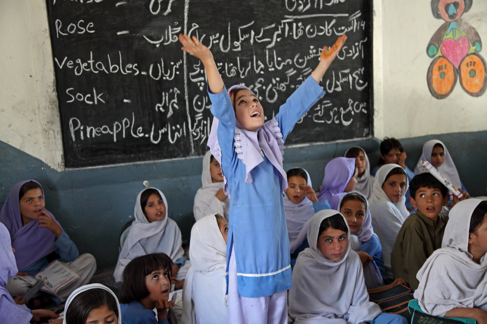

Education in Another's Shoes
Understanding educational attainment globally
Have you ever wondered what your educational outcomes would be if you were born in another country?
EDUCATIONAL OUTCOMES VARY DRASTICALLY AROUND THE WORLD
HOW DOES EDUCATIONAL ATTAINMENT VARY ACROSS COUNTRIES & TIME?
The global distribution of years of education has changed
significantly since 1950. Generally, there has been an upward trend in educational attainment
with time, but some regions and countries have lagged behind. The visualization below shows
educational attainment for individuals aged 25-35 in 146 countries from 1950 to 2010.
Select view:
Differences in educational attainment across regions have persisted over the years. Many of the countries lagging behind today are developing countries.
What drives these differences?
HOW DOES EDUCATIONAL ATTAINMENT DIFFER WITHIN A COUNTRY?
An educational attainment profile shows the share of individuals 20-29 years old in a country who have
completed a given grade. Most developed countries exhibit a similar profile, particularly for grades 1-12.
However, many developing countries exhibit steep dropoffs, which sometimes become starker by
different gender, area, and income breakdowns. Use the visualization below to explore these trends for
different developing countries.
All Population
Gender
Rural/Urban
Income
Why are students dropping out from schools?
- Household preferences:
Parents might have a stronger preference for their sons to attend school. Or they may prefer more schooling for children they perceive to be smarter or more talented.
- Distance to school:
Traveling to school is often physically and financially burdensome, particularly for younger children and girls.
- Financial constraints:
Education comes with all sorts of costs. Direct costs may be incurred in the form of textbooks and uniforms. Time at school also means time spent away from the workforce, which presents opportunity costs.
- Government investment in education:
Varying public investment in education affects the supply of schools and teachers and the quality of education.


WHAT DETERMINES ENROLLMENT IN HIGHER EDUCATION IN A COUNTRY?
There may be many factors that influence whether an individual in a given country
enrolls in higher education or not. The matrix below looks at the relative effect of 11 such factors using nationally
representative survey data in each country.
Hover over the cells for more detail. Use the variable and country labels to sort the cells.
In many developing countries,
costs -- either direct educational costs or opportunity costs from foregone earnings -- are often issues that prevent
children from attending school. The matrix shows that being poor (being in the bottom 40% of the country's wealth distribution)
is the single most defining factor in whether an individual obtains higher education or not.
Parent and community education seem to play an important role in influencing enrollment in many
countries in the sample. Higher educational attainment may reflect greater value placed on education within the
household or community, which is likely to affect whether or not a child attends school.
So...what's it like to be in another's shoes?
Through this website, hopefully, you've received a glimpse of what your educational outcomes may have been like
if you were born in another country. Did you notice the following?
- On the scatterplot/color maps: The educational attainment gap between the least educated and most well educated has actually risen since the 1950s.
- On the line graphs: There is a steep drop-off in educational outcome after a certain grade level.
- On the matrix plot: There is wide variance between countries with respect to which factors like poverty, gender, or household size, etc. may effect enrollment outcomes.
These phenomena point to the fact that there are key structural challenges and inflection points in someone's education that may drastically change his/her life trajectory.
By studying the circumstances and systemic factors around these inflection points (e.g. as illustrated in the matrix plot), policy makers and civil society can work together to positively
affect the individual factors which may have negative influence on a person's educational path.
